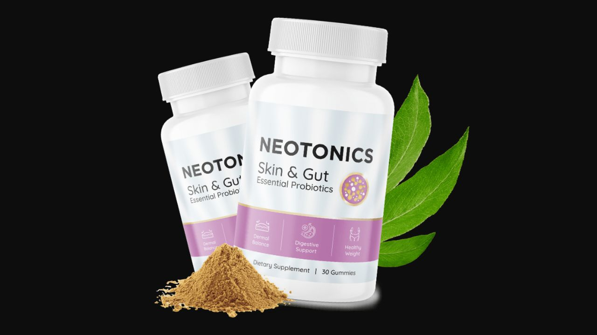

Health Reviews Labs investigated the gut-skin axis research behind Neotonics — and why no amount of topical skincare can fix a problem that starts in your gut. Here's the honest breakdown of how it works, what it costs, and what to realistically expect.
▶ Watch the full Neotonics video review before deciding

Neotonics is a skin health supplement built around a different premise than the serums and creams most people reach for first: that a meaningful share of visible skin aging — uneven tone, puffiness, premature fine lines — originates inside the gut, not on the surface of the skin. It combines a heat-stable probiotic strain (Bacillus Coagulans) with Bakuchiol, a plant-derived compound studied as a gentler alternative to retinol, alongside several supporting botanicals.
Rather than replacing your skincare routine, Neotonics is positioned to work alongside it — addressing an internal, systemic driver of skin aging that topical products were never designed to reach.
When the gut microbiome becomes imbalanced — from antibiotics, processed food, chronic stress, or simply aging — the tight junctions between intestinal cells loosen. Inflammatory compounds called lipopolysaccharides cross into the bloodstream and surface in skin tissue as accelerated aging, uneven tone, and puffiness. This is the gut-skin axis, and it's been documented consistently in dermatology research over the past decade. No vitamin C serum or retinol cream reaches an internal inflammatory driver — the inflammation has to be addressed from the inside.
Neotonics works through two mechanisms simultaneously, addressing the problem from both inside and outside. The first is 500 million CFU of Bacillus Coagulans — a probiotic strain selected specifically because it forms heat-stable spores that survive stomach acid and reach the small intestine alive, unlike the more fragile Lactobacillus strains found in most commercial probiotics. Published research on this strain shows reductions in the gut inflammatory markers that drive the systemic inflammation eventually manifesting in skin tissue.
The second mechanism is Bakuchiol, sourced from Babchi Extract. A head-to-head study published in the British Journal of Dermatology compared Bakuchiol directly to retinol and found comparable effects on fine lines, tone evenness, and photoaging markers — with significantly less irritation, peeling, and photosensitivity than retinol typically causes. Bakuchiol works on the visible surface while Bacillus Coagulans addresses the internal driver — inside and outside, at the same time.
A heat-stable, spore-forming probiotic strain that survives stomach acid and colonizes the small intestine, where published research shows it reduces the gut inflammatory markers linked to systemic, skin-surfacing inflammation.
A natural compound studied head-to-head against retinol in the British Journal of Dermatology, with comparable effects on fine lines and tone — and meaningfully less irritation.
Beta-glucan compounds that support intestinal barrier integrity, directly relevant to reducing the gut permeability that enables the inflammatory cascade in the first place.
Targeted anti-inflammatory support specifically for the gut-skin axis pathway, complementing the probiotic and Bakuchiol mechanisms.
Supports gut barrier integrity and blood sugar regulation — relevant because glycation from elevated glucose accelerates skin aging through collagen cross-linking.
Neotonics earns its place in this category for a specific reason: it's one of the few skin supplements built around a real, published mechanism (the gut-skin axis) rather than a generic "beauty from within" claim. The combination of a research-backed probiotic strain with a genuinely studied retinol alternative gives it two distinct, complementary pathways. It won't replace a skincare routine, and results build gradually rather than overnight — but for the specific problem it targets, the formulation logic holds up.
Gut-Skin Axis Formula · Bacillus Coagulans + Bakuchiol · 19,000+ Verified Reviews
→ Click Here for Official Neotonics SiteSome users notice mild, temporary bloating as the new probiotic strain establishes. This is normal and typically resolves on its own within a few days.
The first visible change most users report — a brighter, more even skin tone, consistent with early Bakuchiol effects on the skin surface.
As Bakuchiol's collagen-supporting effects accumulate and the probiotic strain continues reducing systemic inflammation, fine lines and tone evenness improve further.
The deeper, internal mechanism — gut microbiome rebalancing and the comprehensive skin benefits that follow from it — reaches its full effect at this stage with consistent daily use.
Skin brightness is typically the first noticeable change, often within two to three weeks, while fine-line and tone-related improvements tend to be reported later, around six to eight weeks — consistent with the gut-microbiome mechanism the formula targets taking longer to produce visible downstream effects. Mild digestive adjustment in the first few days is also commonly mentioned and generally described as brief.
Pricing reflects typical official-site structure for this category — confirm current pricing on the official site before purchase.
19,000+ Verified Reviews · Money-Back Guarantee
→ Click Here for Official Neotonics Site